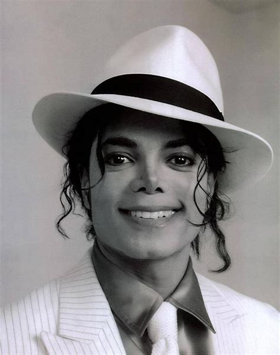

Michael Jackson
Quick Facts
Nick Name: Wacko Jacko, The Gloved One
Also Known As: King Of Pop, MJ, Michael Jackson
Famous As: Singer
Nationality: American
Birthday:August 29, 1958
Died At Age:50
Sun Sign: Virgo
Born In: Indiana
Father:Joseph Jackson
Mother:Katherine Jackson
Spouse/Ex-Spouse:Debbie Rowe (M. 1996; Div. 1999), Lisa Marie Presley (M. 1994; Div. 1996)
Founder/Co-Founder: Heal The World Foundation
Place Of Death: Holmby Hills, Los Angeles, California.
Cause Of Death: Drug Overdose
Diseases & Disabilities: Asperger's Syndrome, Lupus